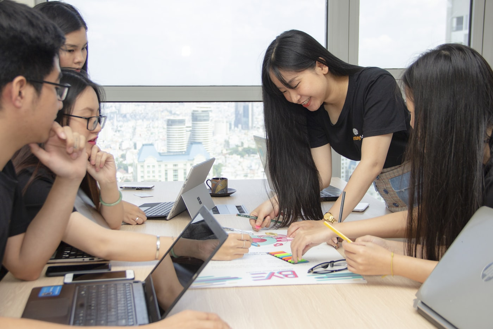

Збери дрон. Підніми в небо. Це твоя наука.
Тут ти не граєш у пілота — ти стаєш інженером. Паяєш плату, пишеш код, налаштовуєш радіо і запускаєш машину, яку зібрав власними руками. Пілотування — це лише фінал. Решта — справжня фізика, електроніка й командна робота.
Не презентація. Руки на платі з першого дня.
Забудь про нудну теорію на годину. Коротко пояснюємо принцип — і одразу береш у руки інструмент. За курс ти збереш FPV-дрон з нуля: розпаяєш контролер, з'єднаєш мотори й регулятори, налаштуєш політний контролер і прив'яжеш апаратуру керування. Потренуєшся на симуляторі, де розбити дрон не страшно, а потім вийдеш у реальний політ із тим апаратом, що зібрав сам. Це не іграшка з коробки — це твоя машина, яку ти розумієш до останнього дроту.
 Що ти реально зробиш
Що ти реально зробишДрон — це шість наук в одному корпусі
Поки одні думають, що дрон — це джойстик, ти розбираєшся в тому, як він узагалі тримається в повітрі. Ці навички працюють далеко за межами польоту — у робототехніці, інженерії, IT.
Електроніка й паяння
Читаєш схему, паяєш з'єднання, розумієш, куди йде струм і чому щось гріється.
Код і автономність
Прошиваєш контролер, налаштовуєш режими польоту, торкаєшся програмування реальної техніки.
Радіозв'язок
Розбираєшся в частотах, каналах і відеолінку — як сигнал доходить і чому іноді ні.
Фізика польоту
Тяга, вага, центр мас, аеродинаміка — наживо, а не в підручнику.
Хімія акумуляторів
Як працює Li-Po, чому його не можна вбивати і як видобути максимум заряду безпечно.
Пілотування
Симулятор, потім реальне небо. Фінальні 5–10%, які стають можливими завдяки всьому іншому.
Команда: інженер, пілот, збирач. Знайди своє.
Класний дрон не збирає одна людина — це робота екіпажу. На курсі ти пробуєш різні ролі й знаходиш ту, де ти найсильніший: хтось веде електроніку, хтось доводить політ, хтось тримає збірку. Поруч — наставники, які реально літали й паяли: ветерани, інженери, педагоги. Вони не читають лекцій згори, вони працюють пліч-о-пліч. Половина групи — діти військових, половина — цивільних. Тут ти знаходиш своїх.

Ти не самТи не просто запускаєш дрон. Ти доводиш собі, що можеш зібрати складне з нуля — і воно полетить.
Готовий зібрати свій перший дрон?
Базовий курс — 8 занять, вік 13–17, безкоштовно на громадських засадах. Місць у групі обмежено: формат руками вимагає, щоб наставник дійшов до кожного. Залишай заявку — і починаємо.